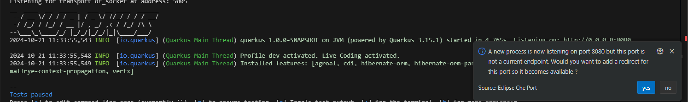
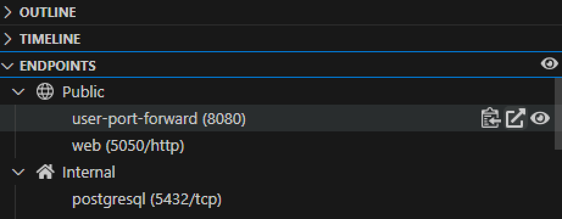
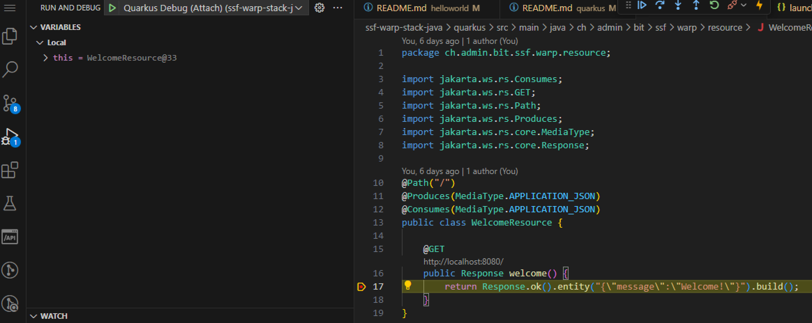

Quarkus Hello World Application
This tutorial guides you through building and running a simple REST API using Quarkus and PostgreSQL.
Tutorial
The code examples and instructions in this tutorial are located under the
openshift-quickstartproject in thetutorials/java/quarkusdirectory.
Ensure you are in this directory before executing the commands.
-
Navigate to the Tutorial Directory
-
Or open a New Terminal
🚀 Features
Backend (Quarkus REST API)
- Provides RESTful endpoints.
- Secure database interactions using prepared statements (PostgreSQL).
- Implements API health check (ping functionality).
🛠️ Initial Setup
Prerequisite: Spin Up PostgreSQL Container on Laptop
To set up a PostgreSQL container locally, follow these steps:
- Run PostgreSQL Container:
Start a new PostgreSQL container with the following command:
podman run -d -v $(pwd):/projects -e POSTGRESQL_USER=user -e POSTGRESQL_PASSWORD=pass -e POSTGRESQL_ROOT_PASSWORD=root -e POSTGRESQL_DATABASE=db -p 5432:5432 registry.redhat.io/rhel9/postgresql-16:latest
- Verify Container is Running:
Check that your PostgreSQL container is running:
Database Configuration (First-time setup)
The Quarkus application will automatically initialize the database schema on first startup. The schema creation is handled by Hibernate ORM using the entity classes defined in the application.
You can verify the schema creation by checking the application logs during startup:
Building the Application
To build the application, use the following Maven command:
This command will compile the project and package it into a JAR file located in the target/quarkus-app/ directory.
Running the Application
You can run the application like normal java app.
Or you can run your application in development mode, which enables live coding, using:
Expose the endpoint and access the application.
 
Debugging with VSCode
- Configure Launch Settings:
Create a
launch.jsonfile in the.vscodedirectory with the following configuration:
{
"version": "0.2.0",
"configurations": [
{
"type": "java",
"name": "Quarkus Debug (Attach)",
"request": "attach",
"hostName": "localhost",
"port": 5005
}
]
}
- Start the Application in Debug Mode: Run the application with debugging enabled:
- Attach the Debugger
In VSCode, go to the Run and Debug view, and select "Quarkus Debug (Attach)" to start debugging.

Packaging the Application
To package the application execute:
Run the packaged application using:
Build the Image
Use the following command to build the image. This command uses the Dockerfile located at src/main/docker/Dockerfile.jvm:
- Run the Docker Container: Once the image is built, you can run the container using:
```bash podman run quarkus:latest -p 8080:8080 ````
(Optional) Creating a Native Executable
Note: Building a native executable can be resource-intensive and may require significant CPU and memory resources. Ensure your system has sufficient resources available before proceeding.
You can create a native executable using:
Run the native executable with:
Explore API Endpoints
Access the API endpoints directly via your browser or API testing tools like Postman or curl.
✅ Testing the Application
- Verify Functionality:
- Check message retrieval and display.
- Test adding new messages.
- Use ping functionality to verify API health.
Example curl commands:
-
Health check:
-
Retrieve messages:
-
Add a new message:
🎉 Congratulations! You've successfully set up and tested your Quarkus REST API with PostgreSQL.
🚀 Deploying Backend on OpenShift using Helm
Steps to Deploy
- Navigate to the Backend Helm Chart Directory:
Change to the directory containing the Helm chart for the backend:
- Deploy the Backend using Helm:
Use the following command to deploy the backend application on OpenShift:
This command will deploy the backend application using the Helm chart located in the current directory.
- Verify Deployment:
Check the status of the deployed pods to ensure everything is running smoothly:
You should see the backend and postgres pods up and running.
- Access the Backend Service:
Once deployed, you can access the backend service using the route created by OpenShift. Retrieve the route with:
Use the URL provided to interact with your backend API.